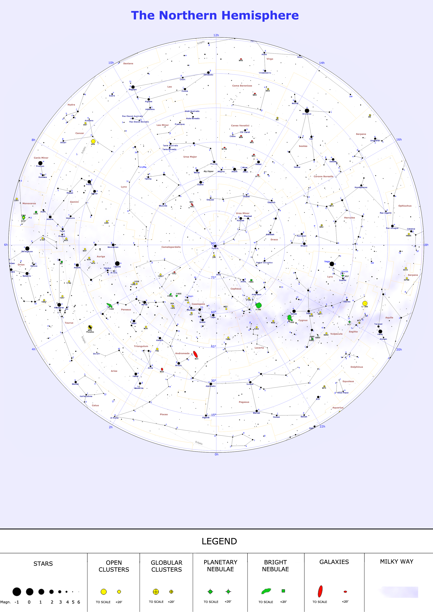
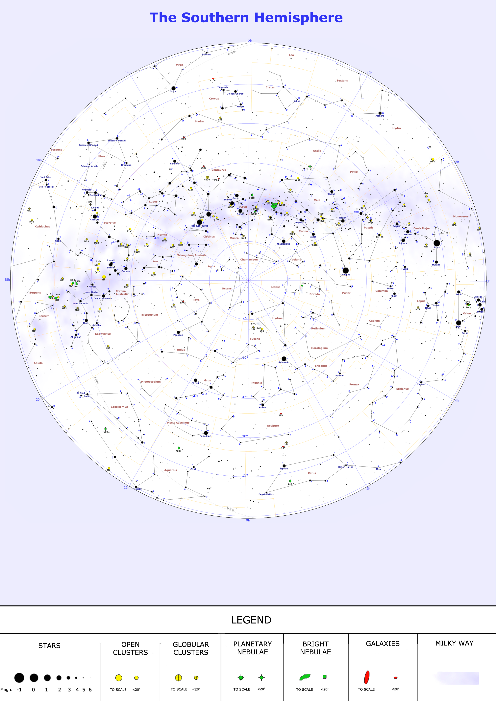

解谜知识-天文
推荐安装天珩字库以显示更多字符。
天文符号
太阳系
| 天体 | 英文 | 符号 | 图片 |
|---|---|---|---|
| 太阳 | Sun | ☉ | |
| 月亮 | Moon | ☾ | |
| 水星 | Mercury | ☿ | |
| 金星 | Venus | ♀ | |
| 地球 | Earth | ♁ | |
| 火星 | Mars | ♂ | |
| 木星 | Jupiter | ♃ | |
| 土星 | Saturn | ♄ | |
| 天王星 | Uranus | ♅⛢ | |
| 海王星 | Neptune | ♆⯉ |
黄道十二星座
| 星座 | 拉丁名称 | 符号 |
|---|---|---|
| 白羊座 | Aries | ♈︎ ♈ |
| 金牛座 | Taurus | ♉︎ ♉ |
| 双子座 | Gemini | ♊︎ ♊ |
| 巨蟹座 | Cancer | ♋︎ ♋ |
| 狮子座 | Leo | ♌︎ ♌ |
| 处女座 | Virgo | ♍︎ ♍ |
| 天秤座 | Libra | ♎︎ ♎ |
| 天蝎座 | Scorpio | ♏︎ ♏ |
| 射手座 | Sagittarius | ♐︎ ♐ |
| 摩羯座 | Capricorn | ♑︎ ♑ |
| 水瓶座 | Aquarius | ♒︎ ♒ |
| 双鱼座 | Pisces | ♓︎ ♓ |
小行星、矮行星和其他天体
| 编号 | 天体 | 英文 | 符号 | 图片 |
|---|---|---|---|---|
| 1 | 谷神星 | Ceres | ⚳ | |
| 2 | 智神星 | Pallas | ⚴ | |
| 3 | 婚神星 | Juno | ⚵ | |
| 4 | 灶神星 | Vesta | ⚶ | |
| 5 | 义神星 | Astraea | ⚖ | |
| 6 | 春神星、韶神星 | Hebe | | |
| 7 | 虹神星 | Iris | | |
| 8 | 花神星 | Flora | | |
| 9 | 颖神星 | Metis | | |
| 10 | 健神星 | Hygiea | ⚕ | |
| 11 | 海妖星 | Parthenope | | |
| 12 | 凯神星 | Victoria | | |
| 13 | 芙女星 | Egeria | | |
| 14 | 司宁星 | Irene | | |
| 15 | 司法星 | Eunomia | | |
| 16 | 灵神星 | Psyche | | |
| 17 | 海女星 | Thetis | | |
| 18 | 司曲星 | Melpomene | | |
| 19 | 命神星 | Fortuna | | |
| 26 | 冥后星 | Proserpina | | |
| 28 | 战神星 | Bellona | | |
| 29 | 海后星 | Amphitrite | | |
| 35 | 沉神星 | Leukothea | | |
| 37 | 忠神星 | Fides | ✝ | |
| 99942 | 毁神星 | Apophis | ||
| 20000 | 伐楼拿 | Varuna | ||
| 28978 | Ixion | |||
| 50000 | 创神星 | Quaoar | 🝾 | |
| 90377 | 塞德娜 | Sedna | ⯲ | |
| 90482 | 亡神星 | Orcus | 🝿 | |
| 120347 | 潫神星 | Salacia | ||
| 134340 | 冥王星 | Pluto | ♇⯓ |  |
| 136108 | 妊神星 | Haumea | 🝻 | |
| 136199 | 阋神星 | Eris | ⯰ | |
| 136472 | 鸟神星 | Makemake | 🝼 | |
| 174567 | Varda | ❈ | ||
| 225088 | 共工星 | Gonggong | 🝽 | |
| 229762 | 雹神星 | Gǃkúnǁʼhòmdímà |
星座
转：天文星座知识汇总
星座图 Constellation Map
北天半球：

南天半球

完善中